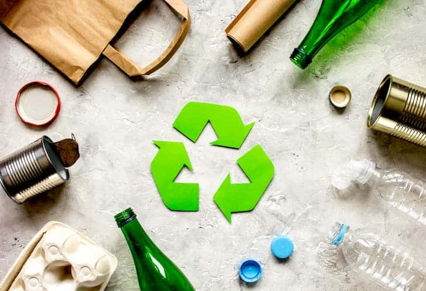
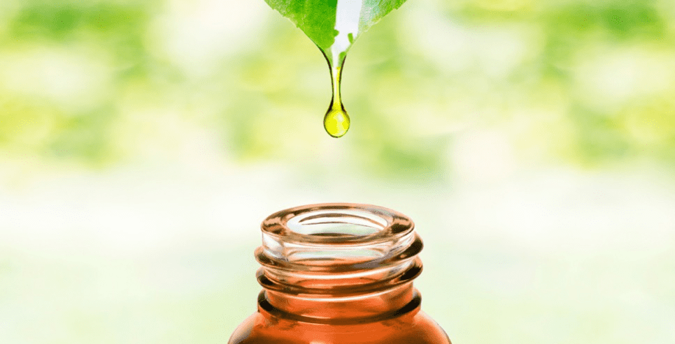

1 - Walk, bike, carpool or use public transportation
By doing these, we are actually reducing the number of cars on the road that release gases as air pollutants.
2 - Recycle and use recycled products
We should reduce the use of disposable products. This is because the use of disposable products will cause manufacturers to increase production, which in turn creates more sources of air pollution during the production process. This can be avoided by using recycled product in our daily life.
3 - Use natural products and non-toxic cleaners
Most air fresheners, cleaners, paints and cleaners on the market contain toxic substances such as volatile organic compounds (VOCs). These substances are easy to volatilize into the indoor air, which will not only cause air pollution, but also endanger health.